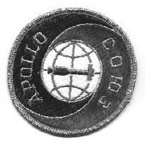
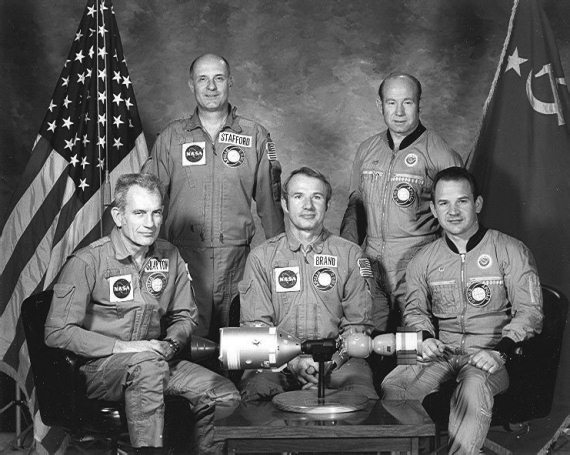
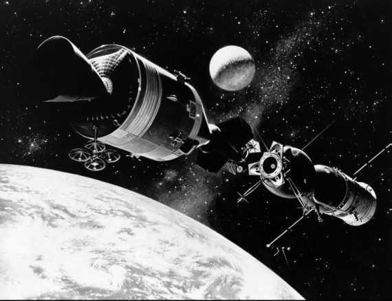

Советско-американский космический полет
Стыковка в космосе советского и американского космических кораблей стала одним из самых важных событий в пилотируемой космонавтике 1970-х годов. Эту операцию, которую пресса образно назвала «рукопожатием на орбите», с одобрением восприняли во всем мире как символ разрядки и начало международного сотрудничества в космосе.
Но сотрудничество двух главных игроков на космической арене началось не тогда, когда было подписано соглашение об осуществлении совместного пилотируемого полета, а на десять лет раньше. Еще в июне 1962 года первый официальный документ о сотрудничестве в космосе подписали Академия наук СССР и НАСА. На основе положений этого соглашения и некоторых других ранних договоренностей удалось создать прямую линию связи между мировыми метеорологическими центрами в Москве и Вашингтоне. Также удалось провести совместные эксперименты в области связи через космос посредством пассивного спутника связи «Эхо-2» и написать научный трактат «Основы космической биологии и медицины». Были и другие достижения.
Однако все эти усилия во второй половине 1960-х годов оставались ограниченными и незначительными по сравнению с возможностями двух космических держав. Впрочем, что еще можно было ждать от стран, находившихся в состоянии холодной войны друг с другом?
К концу 1960-х годов ситуация на политической арене стала постепенно меняться к лучшему и, как следствие, СССР и США осознали наконец возможность и необходимость партнерства в космосе. Особенно там, где речь шла о безопасности пилотируемых полетов. Но одно дело осознать, а другое – реализовать. Из-за несовместимости систем стыковки советские и американские космические корабли в случае необходимости не могли бы состыковаться и выполнить спасательную миссию. Требовались унифицированные средства, которые можно было бы применить, если бы кто-то из астронавтов или космонавтов оказался «пленником орбиты»

Эмблема программы ЭПАС
(Экспериментальный полет «Аполлон» – «Союз»)
В октябре 1970 года были созданы объединенные рабочие группы, каждая из которых изучала тот или иной аспект разработки нового стыковочного оборудования. Они рассмотрели радио– и оптические системы сближения и стыковки кораблей; отличия систем связи и управления микроклиматом, используемых в космических кораблях двух стран; основные принципы функционирования и проекты предлагаемой системы стыковки; вопросы стоимости и возможность испытания новой системы стыковки. Основной вывод, который был сделан по результатам работы: создать унифицированный стыковочный узел можно и нужно, и это в интересах обоих стран.
Проект был окончательно одобрен на советско-американской встрече на высшем уровне в мае 1972 года, что нашло отражение в Соглашении о сотрудничестве в исследовании и использовании космического пространства в мирных целях, заключенном на срок пять лет. Совместный полет, где предполагалось испытать новое оборудование, был назначен на 1975 год. Так и появился ЭПАС (Экспериментальный полет «Аполлон» – «Союз»).
На решение всех технических проблем специалистам потребовалось около трех лет. Но до самого последнего момента не было окончательной уверенности, что испытание состоится. И основной причиной этого была не техника, а политика. Очень многие события, происшедшие за эти три года, могли повлиять на исход дела.
Отношения между СССР и США не один раз претерпевали серьезные изменения: от «дружбы» в мае 1972 года до прямой конфронтации в октябре 1973 года, когда на Ближнем Востоке вспыхнула новая война между Израилем и арабскими странами; от Уотергейтского скандала до Владивостокских договоренностей. Но, несмотря на взлеты и падения, работы по ЭПАСу двигались в нужном направлении.
В 1973 году были утверждены экипажи кораблей. Командиром основного экипажа корабля «Союз» был назначен Алексей Леонов – первый человек, совершивший выход в открытый космос. Его напарником стал Валерий Кубасов. Дублерами Леонова и Кубасова были названы Анатолий Филипченко и Николай Рукавишников. Были сформированы и два резервных экипажа: Юрий Романенко и Александр Иванченков, Владимир Джанибеков и Борис Андреев.
Основным экипажем корабля «Аполлон» командовал Томас Стаффорд, ветеран трех космических полетов, в том числе полета к Луне на корабле «Аполлон-10». Дональд Слейтон стал пилотом стыковочного отсека корабля, а Вэнс Бранд – пилотом отсека экипажа. Дублерами для «Аполлона» были названы Алан Бин, Рональд Эванс и Джек Лусма. В резервный экипаж вошли Юджин Сернан, Кэрол Бобко (Karol Bobko) и Роберт Овермейер (Rober Overmyer).
Восемь космонавтов и девять астронавтов провели тренировки по всем аспектам совместного полета. В процессе тренировок советские специалисты ознакомили астронавтов США с кораблем «Союз» в Центре подготовки космонавтов имени Юрия Гагарина, а советские космонавты обучались на тренажере корабля «Аполлон» в Центре пилотируемых полетов в Хьюстоне.
Совместный полет начался безупречным во всех отношениях стартом корабля «Союз», запущенного 15 июля 1975 года в 12 часов 20 минут по Гринвичу. Впервые в истории запуск советского космического корабля транслировался по телевизору в прямом эфире.
Во время маневров на четвертом и семнадцатом витках Леонов сформировал круговую монтажную орбиту высотой 225 километров. Эти маневры были успешными. Максимальное отклонение монтажной орбиты от установленной совместными документами составило 250 метров при допустимой величине 1,5 километра, время достижения кораблем данной точки орбиты отличалось от расчетного на 7,5 секунды при допустимой величине отклонения 90 секунд.

Экипажи кораблей ««Аполлон» и «Союз-19»
Через 7 часов 30 минут после старта корабля «Союз» ракета-носитель «Сатурн-1Б» вывела корабль «Аполлон» на орбиту с параметрами 149 и 167 километров с тем же наклонением, что и орбита «Союза». Через час после выведения астронавты приступили к транспортным и стыковочным операциям, чтобы извлечь стыковочный отсек из ракеты-носителя, и выполнили серию фазирующих маневров для подготовки к стыковке с кораблем «Союз».

Встреча на орбите
Небольшие затруднения, которые возникли на обоих кораблях, были успешно преодолены и не смогли оказать влияния на результаты полета. Астронавтам сначала не удалось провести демонтаж стыковочного механизма на входе в стыковочный отсек. Но с этой проблемой сталкивались и раньше, во время одного из полетов на Луну, поэтому она уже не виделась такой страшной. Неполадки на борту «Союза» относились к работе телевизионных камер и также не оказывали влияния на ход полета. Другие проблемы на борту «Аполлона» – неполадки системы удаления мочи, пузырек инертного газа в одной из топливных магистралей, зацепившийся москит, совершивший полет в космос, – были еще менее существенными.
Стыковка на орбите 17 июля была самым напряженным моментом полета. Роль активного корабля выполнял «Аполлон». Стыковка состоялась на несколько минут раньше намеченного срока. Это была решающая фаза программы ЭПАС. Испытание в реальных космических условиях новой совместимой системы стыковки прошло успешно. Потом были переходы астронавтов и космонавтов из корабля в корабль, совместные застолья, обращения к участникам полета Генерального секретаря ЦК КПСС Леонида Брежнева и президента США Джеральда Форда, совместные эксперименты.
За первой расстыковкой двух кораблей последовала повторная стыковка, в которой роли кораблей поменялись и стыковочный агрегат «Союза» стал активным. Успешной повторной стыковкой завершилась проверка андрогинной системы стыковки.
На шестые сутки полета, 21 июля, корабль «Союз» сошел с орбиты и совершил посадку в Казахстане. Через трое с половиной суток «Аполлон» приводнился в заданном районе Тихого океана. Неисправность во время посадки «Аполлона» привела к проникновению в кабину ядовитой газообразной четырехокиси азота, однако все окончилось благополучно.
В результате успешного выполнения программы ЭПАС был накоплен неоценимый опыт для будущих совместных космических полетов кораблей и станций разных стран и для проведения спасательных работ в космосе в случае необходимости. К счастью, применять на практике все наработки совместного полета никогда не пришлось.
В мае 1977 года, когда истек срок ранее принятого соглашения о сотрудничестве в космосе, Советский Союз и Соединенные Штаты заключили новое пятилетнее соглашение о совместной космической деятельности. В нем было провозглашено, что результаты, полученные при исследовании космического пространства, должны использоваться только в мирных целях, на благо всех народов Земли. Однако потребовалось еще почти 20 лет, чтобы эти слова перестали восприниматься, как декларативные, и стали нормой нашей жизни.